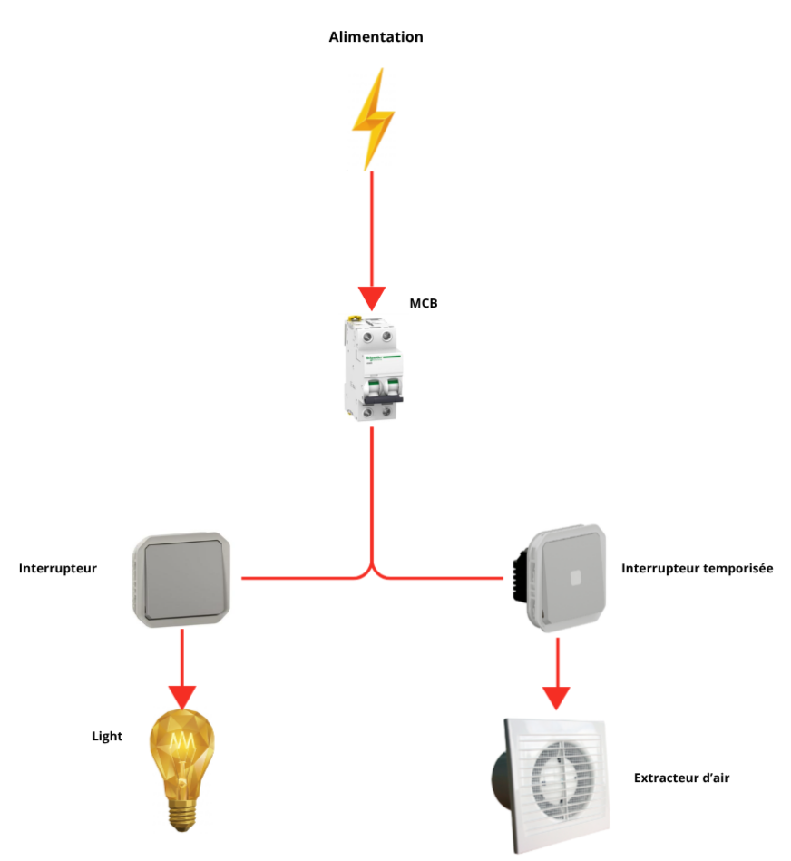

Cette solution combine un interrupteur d'éclairage standard et un interrupteur temporisé (Time Lag). Elle permet une extinction automatique de l'extracteur d'air après une période prédéfinie.

| MSF Code | Description | Commentaire |
|---|---|---|
| PELEMCBS2B03M | Disjoncteur B3 6kA, 2P | Protection principale du circuit contre surcharge et court-circuit. |
| - | Caisson de Ventilation 230V, 40/60Hz | Boîtier qui contient les composants d'un système de ventilation. |
| PELETERMQWTW5 | Interrupteur Temporisé 250V~ 8A 50/60Hz | Permet une extinction automatique du caisson d'extraction après une période prédéfinie. |
| PELETERMQW2W5 | Interrupteur 250V~ 10A 50Hz | Interrupteur standard pour le contrôle de l'alimentation électrique. |